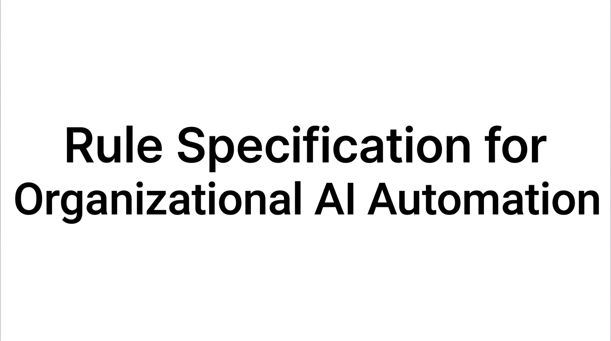

TL;DR: A very quick exploration of how rule specification methods, such as IG 2.0, can help specify and verify the legal, administrative, and organizational rules governing AI agents in public systems, enabling more accountable automation.

As governments begin considering AI agents that can act across public digital infrastructure to deliver services, the central safety question becomes whether we can specify, test, and verify the conditions under which an agent is allowed to act before giving it access to rule-governed consequential systems.
Software engineering already offers useful approaches to this challenge. Formal specification describes, in precise terms, what a system is supposed to do (what is permitted, required, or prohibited) before it is built. With the rise of AI-assisted coding, many software engineers are advocating for a renewed emphasis on specification-driven development processes. Formal verification can then establish whether important properties of that specification hold across all reachable system states within the formal model, shedding light on potential failures before deployment.
Public administration, however, cannot simply import these techniques from computer science. Public systems are governed by legislation, administrative procedures, organizational mandates, accountability relationships, and informal institutional logic. The difficult task is determining what should be specified in the first place, and then making it formal and verifiable.
Let's take an example: an agent acting on behalf of a public administration cannot authorize a benefits payment without the approval, evidence, and review procedures required by law. These intersecting legal and organizational requirements can create thousands of possible interactions and system states involving citizens, officials, databases, and AI agents that the system design must account for. In particular, the software control architecture plays an important role in ensuring that processes follow the required conditions. This control architecture will be distributed across coded functions, role-based access controls, and other mechanisms. The more end-to-end an agentic system becomes, the more important it is to formally specify the system in a coherent way.
While specification is already an established practice in digital transformation, we still lack a clear approach to methodically untangle the legal and administrative complexity of rule-based organizational systems (public and private), while keeping their rules machine-readable and actionable for engineers.
A promising analytical tool from institutional analysis, Institutional Grammar (IG 2.0), could help translate this institutional architecture into structured representations of actors, roles, permissions, obligations, conditions, and decision procedures. AI could then assist domain experts in converting those representations into formal models that can be simulated and verified. See: https://institutionalgrammar.org/
This would create a digital institutional design and testing environment for agentic government. Before an AI agent is connected to a system, policymakers could investigate whether the proposed institutional architecture preserves defined safety and accountability invariants under thousands of possible sequences of action.
Building this capability cannot be left to AI engineers alone. Lawyers, public administrators, policy specialists, institutional scholars, formal-methods researchers, and domain experts need to work together on the specification problem: identifying which institutional properties must survive agentic automation.
If agentic AI is going to become part of the public digital space, governments need ways to experiment with digital institutional architectures before experimenting on citizens. The policy challenge is to develop the institutional languages, interdisciplinary methods, and public-sector capacity needed to use them.
Most important in my view, is the development of a methodology that can account for both human and agentic actors within the same institutional framework, allowing us to design and analyse systems more rigorously.